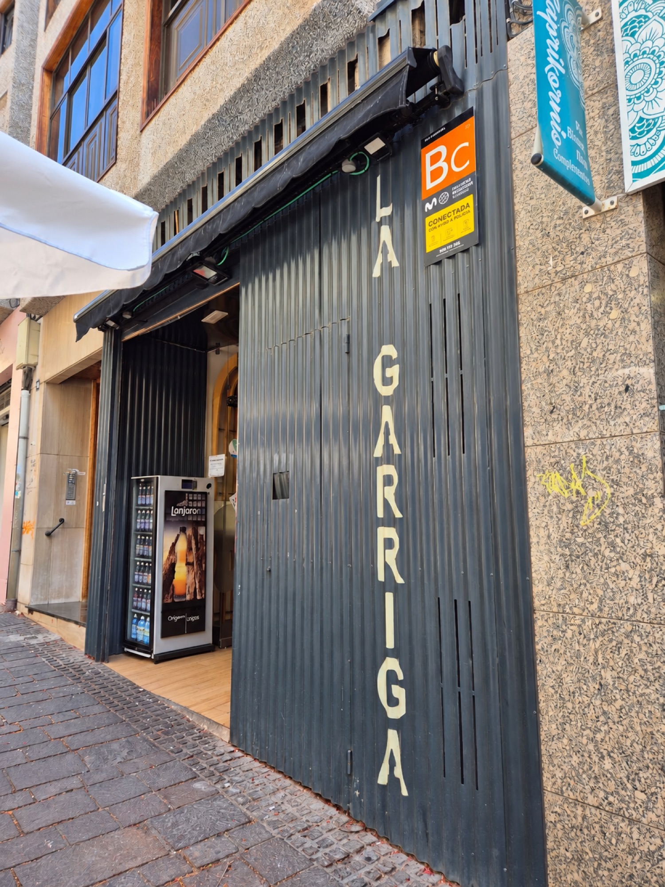

● Bar & Feinkost · Zentrum von Santa Cruz
LaGarriga
Das berühmteste Tortilla-Bocadillo Teneriffas. Wurstreste, Ei und knuspriges Brot: dieselbe Idee seit 1953.

- Seit 1953
- Pérez Galdós, 24
- Santa Cruz de Tenerife
- Sonntag geschlossen
01 — Geschichte
Siebzig Jahre
Bocadillos
Zwei katalanische Partner eröffneten in Santa Cruz eine Charcutería und nannten sie La Garriga. Was danach kam, kennt die halbe Insel.
- 1950er
Eine katalanische Charcutería
Zwei Partner aus Katalonien gründen La Garriga im Zentrum von Santa Cruz: Serrano, Chorizo, Käse und Aufschnitt frisch geschnitten.
- 1953
Nichts wird weggeworfen
Aus den Resten beim Wurstschneiden machten sie Tortilla. Resteküche, die – so Directo al Paladar – zur Gans wurde, die goldene Eier legt.
- Das Rezept
Gehackte Wurst, viel Ei
Heute wird die Mischung eigens gehackt: Lomo, Schinken, Chorizo, Salchichón und Kochschinken, in Sonnenblumenöl angebraten, mit verquirltem Ei gebunden und in der Pfanne gewendet. Dazu knuspriges Brot – der Tipp des Hauses: im Kühlschrank lagern.
- Heute
900 bis 1.000 pro Tag
So viele gehen laut dem Haus täglich über die Theke; am Dreikönigstag über 4.000. Immer noch in der Calle Pérez Galdós, jetzt Nummer 19.
Die Menschen hinter der Theke
2022 verabschiedete Diario de Avisos Lorenzo und José Manuel, zwei der Macher dieser Bocadillos, in den Ruhestand. Ihre Kollegen sagten:
„Uns verlässt ein Freund, Vater, Kollege, Vertrauter und guter Profi.“ (übersetzt)
02 — Theke
Die Klassiker
Preise und Tagesangebot: an der Bar fragen oder anrufen.
Tortilla-Bocadillo Der Star
Der Klassiker des Hauses. Wurst-Tortilla in knusprigem Brot. An der Bar bestellen.
Ganze Tortilla zum Mitnehmen Auf Bestellung
Für zu Hause, das Büro oder die Feier. Telefonisch bestellen.
Serrano & Chorizo
Frisch geschnitten, wie in der ursprünglichen Charcutería.
Käse
Käseauswahl, im Bocadillo oder am Stück.
Braten
Bocadillos mit Braten, Klassiker des Hauses.
Bonito
Der andere Klassiker der Theke.
Eine ganze Tortilla?
Rufen Sie an und sagen Sie, wie viele und wann Sie sie abholen. Festnetz: kein WhatsApp.
03 — Bewertungen
Was Santa Cruz
sagt
“Ein Pflichtstopp für ein Tortilla-Bocadillo, wenn man in Santa Cruz de Tenerife ist.”(übersetzt)
“Ausgezeichnete Bocadillos, besonders das mit Tortilla. Ich bin seit über 50 Jahren Kunde.”(übersetzt)
“Ein echter Klassiker von Santa Cruz. Die Tortilla-Bocadillos der Garriga: traditionell und köstlich zu jeder Tageszeit.”(übersetzt)
“Seit Jahrzehnten wird hier das legendäre Bocadillo „Tortilla con migas“ serviert.”(übersetzt)
“Tortilla-Bocadillos. Die besten der Insel.”(übersetzt)
“Hier isst man sehr gute Bocadillos zu einem fairen Preis.”(übersetzt)
“Mir gefiel der Service und wie schnell unsere Bestellung kam.”(übersetzt)
“Sehr freundlich zu den Gästen, und die Bocadillos sind unglaublich.”(übersetzt)
Google-Bewertungen, über Gastroranking ↗
In der Presse
04 — Besuch
Pérez Galdós, 24
- Adresse
- C/ Pérez Galdós, 24 · 38002 Santa Cruz de Tenerife
- Öffnungszeiten
- Montag bis SamstagBitte anrufen für die heutigen ZeitenSonntagGeschlossen
- Telefon
- 922 28 55 01Festnetz · auch Bestellung ganzer Tortillas